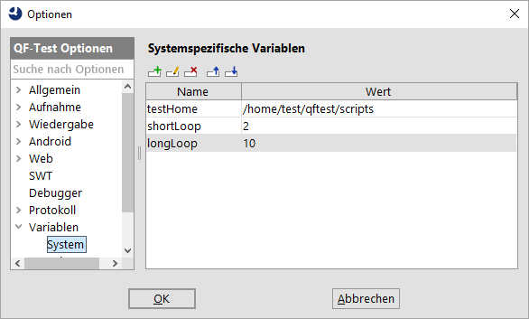
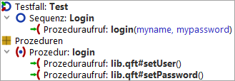

| Version 6.0.3 |
 Video: 'Variablen'
Video: 'Variablen'
Variablen sind von zentraler Bedeutung, wenn es darum geht, die Wiederverwendbarkeit einer Testsuite zu steigern. Zum Einsatz kommen sie vor allem beim Aufruf von 'Prozeduren'. Variablen sind aber auch in vielen anderen Situationen hilfreich.
Variablen können in fast allen Attributen verwendet werden, mit Ausnahme von Wahrheitswerten (Checkboxen). Es gibt drei Varianten von Variablenreferenzen:
$(Variablenname) wird zu dem Wert einer vorher
definierten Variablen expandiert.
${Gruppe:Name} greift auf Externe Daten aus einem ResourceBundle
oder einer Properties Datei zu. Die Gruppen system und
qftest sind immer definiert
und haben besondere Bedeutungen (vgl. Abschnitt 6.5).
$[Ausdruck] führt eine Berechnung durch.
Um zu erklären, wie und warum Variablen an verschiedenen Stellen definiert werden, müssen wir zunächst darauf eingehen, wie der Wert einer Variablen ermittelt wird, wenn diese bei einem Testlauf referenziert wird.
Ein Satz von Variablendefinitionen, genannt Zuordnungen, wird auf einem von zwei Stapeln
abgelegt. Der primäre Stapel ist für tatsächliche bzw. direkte
Zuordnungen bestimmt, während der sekundäre Stapel Definitionen von
Rückfallwerten aufnimmt. Wenn der Wert einer Variable mittels
$(...) angefordert wird, durchsucht QF-Test zunächst
den primären Stapel von oben nach unten nach einer passenden
Definition. Wird keine solche gefunden, wird die Suche im sekundären
Stapel fortgesetzt, ebenfalls von oben nach unten. Bleibt auch diese
Suche erfolglos, wird eine UnboundVariableException geworfen, sofern Sie nicht
mittels der speziellen Syntax ${default:varname:defaultvalue} einen
Defaultwert angegeben haben (vgl. Abschnitt 6.5).
|
|
|
||||||||||||||
|
| Abbildung 6.1: Direkte Zuordnungen und Defaultwerte | ||||||||||||||
Dieser Mechanismus unterstützt rekursive bzw. selbstbezogene
Variablendefinitionen. Zum Beispiel bewirkt das Setzen der Variable
classpath auf den Wert
irgendein/pfad/archiv.jar:$(classpath)
eine Erweiterung des Wertes einer Definition von classpath
mit geringerer Bindungskraft. Existiert keine solche Definition, wird
eine RecursiveVariableException ausgelöst.
Variablen können an verschiedenen Stellen definiert werden. Die Definition erfolgt über zweispaltige Tabellen (vgl. Abschnitt 2.2.5). Dort kann in jeder Zeile eine Variable mit Name und Wert angegeben werden.
|
|  | ||
|
| Abbildung 6.2: System Variablen | ||
Vier Sätze von Variablendefinitionen sind über die globalen Optionen zugänglich:
-variable <Name>=<Wert> definiert
werden. Diese Variablen werden oberhalb der Suite-Variablen auf dem primären Stapel
abgelegt. Damit haben Variablen von der Kommandozeile stärkere Bindungskraft als die
System oder Suite-Variablen. Zum Beispiel kann ein Variable count = 1 für
die Testsuite definiert und $(count) als 'Anzahl Wiederholungen'
einer 'Schleife' für schnelle Testläufe benutzt werden. Dann können Sie
qftest -batch -variable count=100 ... zum tatsächlichen Testen
verwenden. Die Kommandozeilenzuordnungen sind hauptsächlich zur Ihrer Information
zugänglich, aber man kann sie auch testhalber verändern.
-test <Index>|<ID> angegebenen Tests gelöscht.
Alle weiteren Definitionen sind Teil der Testsuite selbst:
Betrachten wir folgendes Beispiel:
|
|  | ||
|
| Abbildung 6.3: Variablen Beispiel | ||
Die 'Sequenz' "Login" enthält einen 'Prozeduraufruf' der
'Prozedur' "login" die zwei Parameter erwartet, user
und password. Die Defaultwerte der 'Prozedur'
sind user=username und password=pwd. Der
'Prozeduraufruf' überschreibt diese mit user=myname und
password=mypassword.
Die "login" 'Prozedur' enthält selbst 'Prozeduraufrufe' von weiteren 'Prozeduren' in einer anderen Testsuite namens "lib.qft", um Name und Passwort in GUI Komponenten des SUT zu schreiben. Nehmen wir an, dass die 'Prozeduren' dieser Bibliothek viele gemeinsame Parameter haben. Anstatt für jede 'Prozedur' die gleichen Defaultwerte festzulegen, werden diese in den Variablen der Testsuite abgelegt. Das ist praktisch bei der Erstellung und Bearbeitung der 'Prozeduren' der Bibliothek, da diese damit einzeln ausgeführt werden können, ohne dass extra 'Prozeduraufrufe' erstellt werden müssen.
Das folgende Diagramm zeigt den Zustand des primären und des sekundären Stapels während der Ausführung der 'Prozedur' "lib.qft#setUser":
|
|
|
||||||||||||||||||
|
| Abbildung 6.4: Beispiel zu Variablenbindungen | ||||||||||||||||||
Besonders hervorzuheben ist hier, dass der 'Prozeduraufruf' von
"lib.qft#setUser" in der 'Prozedur' "login" den Parameter
user nicht noch einmal definieren muss, er wird sozusagen
"durchgereicht". Grundsätzlich sollten Sie beim Aufruf einer
'Prozedur' aus einer anderen 'Prozedur' heraus einen Parameter
genau dann und nur dann definieren, wenn er noch nicht explizit definiert wurde
oder wenn Sie einen anderen Wert verwenden wollen.
Oft ist es notwendig einen Wert aus der Oberfläche des SUT auszulesen, um diese als Eingabe für den Test zu verwenden.
QF-Test bietet für diese Aufgabe einen speziellen Satz von Abfrageknoten, verfügbar unter »Einfügen«-»Verschieden Knoten«:
Die ermittelten Werte werden lokalen oder globalen Variablen zugewiesen, die im Abfragekonten deklariert werden können.
Anstatt einen Abfrageknoten per Hand einzufügen, kann ein solcher leichter erzeugt werden, indem man erst einen Mausklick-Knoten auf die gewünschte Komponente aufzeichnet und diesen dann mit Hilfe der Konvertierungsoperation in den gewünschten Abfrageknoten umwandelt.
Auf externe Daten kann mit Hilfe von 'Ressourcen laden' und
'Properties laden' Knoten zugegriffen werden. Diese weisen
einem Satz von Definitionen einen Gruppennamen zu. Den Wert einer
Ressource oder Property mit der Bezeichnung Name erhalten Sie
mit der Syntax ${Gruppe:Name}.
Wird ein Test im Batchmodus ausgeführt (vgl. Abschnitt 1.7), löscht QF-Test
die Ressourcen und Properties vor der Ausführung jedes mit dem Kommandozeilenargument
-test <Index>|<ID> angegebenen Tests. Im interaktiven Modus werden diese
aufgehoben, um das Erstellen einer Testsuite zu vereinfachen. Vor einem kompletten
Testlauf sollten Sie allerdings mittels »Wiedergabe«-»Ressourcen und Properties löschen« für eine saubere Ausgangsbasis
sorgen.
Zusätzlich zu ResourceBundles und Properties sind einige spezielle Gruppen definiert, die immer vorhanden sind:
system haben Sie Zugriff auf die
System Properties der laufenden Java VM (für
Programmierer: System.getProperties()). Es handelt sich dabei immer um die VM,
mit der QF-Test gestartet wurde, da die Variablen-Expansion dort stattfindet.${system:java.class.path} den
CLASSPATH, mit dem QF-Test gestartet wurde oder
${system:user.home} das Heimatverzeichnis des Benutzers. Welche
Namen in der system Gruppe definiert sind, hängt vom
verwendeten JDK ab.
PATH, CLASSPATH
oder JAVA_HOME unterstützt (was auf praktisch allen Systemen der Fall ist, auf
denen QF-Test läuft), kann über die Gruppe env auf diese Variablen zugegriffen
werden.
default einen Defaultwert für eine Variable
angeben. Die Syntax hierfür ist ${default:varname:defaultvalue}.
Dies ist sehr nützlich für Dinge wie generische Komponenten und nahezu überall, wo es
einen sinnvollen Defaultwert für eine Variable gibt, da der Defaultwert dann eng mit
der Anwendung der Variablen verbunden ist und nicht auf 'Sequenz' oder
Testsuite-Ebene definiert werden muss. Natürlich sollten Sie diese Syntax nur verwenden,
wenn die Variable nur an einer oder sehr wenigen Stellen benutzt wird. Wenn Sie dieselbe
Variable mit dem selben Defaultwert an verschiedenen Stellen verwenden, ist es
besser, die normale $(...) Syntax zu verwenden und den Defaultwert explizit
festzulegen, da dieser dann bei Bedarf an einer einzigen Stelle geändert werden kann.
id dient dazu, QF-Test IDs von Komponenten zu referenzieren. Die Werte in
dieser Gruppe expandieren einfach zu sich selbst, d.h. "${id:wasauchimmer}" wird zu
"wasauchimmer". Man kann QF-Test IDs von Komponenten zwar auch ohne diese Gruppe ansprechen,
allerdings verbessert die Referenzierung über diese Gruppe die Lesbarkeit der Tests. Vor
allem aber werden diese QF-Test IDs auch beim Verschieben der referenzierten Komponente oder Änderungen an
ihrer QF-Test ID angepasst.
idlocal ist analog zur Gruppe id, enthält aber zusätzlich den Pfad der
aktuellen Testsuite, d.h. aus "${idlocal:x}" wird "pfad/zur/aktuellen/suite/suite.qft#x". Damit lässt sich
erzwingen, dass eine Komponente nur aus der Testsuite genommen wird, die zum Zeitpunkt der Expansion aktuell
ist, selbst wenn es eine Komponente mit derselben 'QF-Test ID' in der Zieltestsuite für den Prozeduraufruf gibt.
quoteitem können Sie bequem Sonderzeichen wie '@',
'&' und '%' im textuellen Index eines Unterelements schützen, um zu verhindern, dass
dieses als mehrere Unterelemente interpretiert wird. Aus "${quoteitem:user@host.org}"
wird zum Beispiel "user\@host.org".
quoteregex mit ihrem Alias quoteregexp
kann zum Schützen von Sonderzeichen mit spezieller Bedeutung in regulären Ausdrücken
verwendet werden. Dies ist hilfreich, wenn reguläre Ausdrücke dynamisch zusammengebaut
werden.
quotesmartid schützt analog zu quoteitem die Zeichen für Unterelemente
'@', '&' und '%', außerdem die Zeichen ':', '=', '<' und '>' mit spezieller Bedeutung für
SmartIDs. Aus "${quotesmartid:Name: A & B}" wird zum Beispiel "Name\: A \& B".
qftest stellt verschiedene Werte zur Verfügung, die beim
Ablauf eines Tests von Bedeutung sein können. Die bisher definierten Werte können Sie
den folgenden Tabellen entnehmen.
|
|
|
||||||||||||||||||||||||||||||||||||||||||||||||||||||||||||||||||||||||||||||||||||||||||||||||||||||||||||||||||||||||||||||||||||||||||||||||||||||||||
|
| Tabelle 6.1:
Definitionen in der Gruppe qftest
| ||||||||||||||||||||||||||||||||||||||||||||||||||||||||||||||||||||||||||||||||||||||||||||||||||||||||||||||||||||||||||||||||||||||||||||||||||||||||||
Es kann nötig sein, für den korrekten Ablauf eines Tests kleine
Berechnungen durchzuführen. Diese erledigen Sie mit Hilfe der
speziellen Variablensyntax $[Ausdruck], die
Sie in jedem Attribut, das Variablen unterstützt, verwenden können.
Es werden die Operatoren +, -,
*, \ und % (Modulo) für ganze
und Fließkommazahlen unterstützt. Letztere verwenden den Punkt als
Dezimalzeichen, nicht das Komma.
Ausdrücke der Form $[...] bieten aber noch viel weitergehende
Möglichkeiten, da sie vom Jython Interpreter ausgewertet
werden. Zulässig sind alle Ausdrücke deren Syntax für die Jython
Methode eval gültig ist. Näheres zu Jython siehe
Kapitel 11.
Hinweis Der Zugriff auf QF-Test Variablen in
$[...] Ausdrücken folgt den selben Regeln wie in Jython
Skripten (vgl. Abschnitt 11.2.3). Die standard QF-Test
Syntax $(...) und ${...:...} kann für
numerische und Boolesche Werte verwendet werden. Auf Zeichenketten
sollte mittels rc.lookup(...) zugegriffen werden.
Es gibt einen sehr subtilen Aspekt bei der Verwendung von QF-Test Variablen auf den wir noch genauer eingehen müssen:
Wenn ein Satz von Variablendefinitionen auf einen der beiden Stapel gelegt wird gibt es zwei Möglichkeiten zur Behandlung von Referenzen auf Variablen im Wert einer Definition. Hat z.B. die Variable namens 'x' den Wert '$(y)', kann dieser Wert wortwörtlich gespeichert werden, so dass der Wert von '$(y)' erst zu einem späteren Zeitpunkt ermittelt wird, wenn irgendwo '$(x)' referenziert wird. Alternativ kann der Wert von '$(y)' schon beim Binden der Variablen 'x' ermittelt und als Wert von x abgelegt werden. Der erste Ansatz wird als "Lazy Binding" oder "Late Binding" bezeichnet, der zweite als "Immediate Binding".
Der Unterschied zwischen beiden ist natürlich der Zeitpunkt der Expansion und damit der Kontext in dem eine Variable expandiert wird. In den allermeisten Fällen ist das Ergebnis das gleiche, aber es gibt Situationen in denen es von großer Bedeutung ist, Lazy oder Immediate Binding zu verwenden. Betrachten wir die folgenden zwei Beispiele:
Eine Testsuite-Bibliothek stellt eine Prozedur zum Start des SUT mit verschiedenen JDK Versionen bereit. Die Variable 'jdk' wird als Parameter an diese Prozedur übergeben. Zur einfacheren Nutzung definiert der Autor der Bibliothek weitere hilfreiche Variablen auf Testsuite-Ebene, z.B. 'javabin' für das ausführbare Java Programm mit dem Wert '/opt/java/$(jdk)/bin/java'. Zu dem Zeitpunkt, zu dem 'javabin' in den Testsuite Variablen gebunden wird, könnte 'jdk' noch undefiniert sein, so dass Immediate Binding zu einem Fehler führen würde. Doch selbst wenn 'jdk' mit einem Standardwert belegt ist hat Immediate Binding nicht den gewünschten Effekt, da sich der Wert von 'javabin' durch Übergabe eines anderen Wertes für 'jdk' an die Prozedur nicht mehr ändert. Lazy Binding ist hier also die Methode der Wahl.
Betrachten wir eine andere Bibliothek mit einer Prozedur zum Kopieren einer Datei. Die zwei Parameter namens 'source' und 'dest' legen die Ausgangsdatei und das Zielverzeichnis fest. Der Aufrufer der Prozedur möchte die Datei 'data.csv' aus dem Verzeichnis seiner Testsuite an einen anderen Ort kopieren. Die nahe liegende Idee ist, für den Parameter 'source' den Wert '${qftest:suite.dir}/data.csv' an die Prozedur zu übergeben. Mit Immediate Binding liefert '${qftest:suite.dir}' in der Tat das Verzeichnis der aufrufenden Suite. Wird allerdings Lazy Binding verwendet, findet die Expansion erst innerhalb der Prozedur statt, so dass '${qftest:suite.dir}' das Verzeichnis der Bibliotheks-Suite liefert, was im Allgemeinen nicht den gewünschten Effekt hat.
In QF-Test Versionen bis einschließlich 2.2 wurde ausschließlich Lazy Binding unterstützt. Wie die obigen Beispiele zeigen, sind beide Varianten sinnvoll und notwendig. Da es intuitiver und leichter nachvollziehbar ist, ist Immediate Binding nun der Standard, was mittels der Option Werte von Variablen beim Binden sofort expandieren geändert werden kann. Die Option Lazy Binding verwenden falls sofortiges Expandieren scheitert ergänzt diese und ermöglicht eine einfache Migration von älteren Testsuiten zum Gebrauch von Immediate Binding. Die Warnungen, die in diesem Zusammenhang ausgegeben werden, helfen Ihnen, die wenigen Stellen zu lokalisieren, an denen Sie wie unten beschrieben explizit Lazy Binding verwenden sollten. Bis auf die äußerst seltenen Fälle, in denen Lazy Binding benötigt wird, Immediate Binding aber auch funktioniert, so dass kein Rückgriff auf Lazy Binding gemacht wird, sollten alle Tests ohne Änderungen lauffähig sein.
In den wenigen Fällen, in denen es einen Unterschied macht, ob eine Variable mittels Immediate oder Lazy Binding definiert wird, kann dies unabhängig von der Voreinstellung durch eine alternative Variablen-Syntax erzwungen werden. Für Immediate Binding verwenden Sie '$!' anstatt nur '$', Lazy Binding erhalten Sie mittels '$_'. Um z.B. auf Testsuite-Ebene eine Variable zu definieren, deren Wert eine Datei im Verzeichnis dieser Suite ist, verwenden Sie '$!{qftest:suite.dir}/somefile'. Wenn Sie wie in obigem 'jdk' Beispiel Lazy Binding benötigen, verwenden Sie '$_(jdk)'.
Hinweis Mit Lazy Binding war es egal, in welcher Reihenfolge Variablen oder Parameter in einem Knoten oder Datentreiber definiert waren, da während des Bindens keine Expansion stattfand. Bei Immediate Binding werden Variablen von oben nach unten, bzw. bei Datentreibern von links nach rechts expandiert. Das bedeutet, dass die Definition von x=1 und y=$(x) funktioniert und y den Wert 1 erhält, wenn x zuerst definiert wird. Kommt hingegen die Definition von y zuerst, führt dies zu einem Fehler oder dem oben beschriebenen Rückfall auf Lazy Binding.
| Letzte Änderung: 6.9.2022 Copyright © 1999-2022 Quality First Software GmbH |